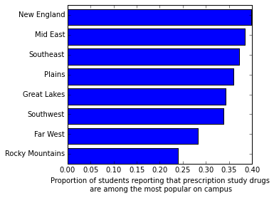
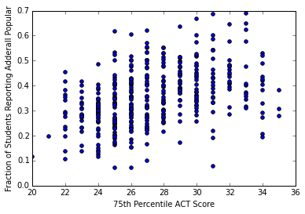
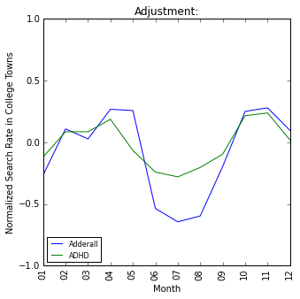
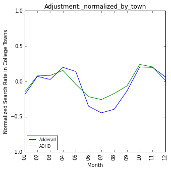
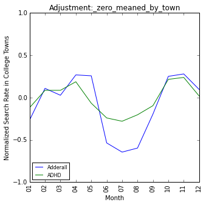

%matplotlib inline Analysis for the story College Students Aren’t The Only Ones Abusing Adderall
from IPython.core.display import HTML
def css_styling():
styles = "<style>div.cell{width:100%;margin-left:1%;margin-right:auto;}.container { width:100% !important; } </style> "
return HTML(styles)
css_styling()First load data
from pylab import *
import pandas as pd
import numpy as np
import os
import statsmodels.api as sm
from statsmodels.iolib.summary2 import summary_col
#load in NSDUH data
nsduh_data = pd.read_csv('ICPSR_35509/DS0001/35509-0001-Data.tsv', sep = '\t')
#load in Niche data
niche_data = pd.read_csv('niche/SchoolPoll.csv')
#load in IPEDS data
def getIPEDSData():
files = ['ipeds_data/CSV_7312015-162.csv', 'ipeds_data/CSV_7312015-826.csv']
for i, f in enumerate(files):
d = pd.read_csv(f)
d.index = d.unitid
del d['unitid']
if i == 0:
all_d = d
else:
all_d = pd.concat([all_d, d])
ipeds_d = {}
for c in all_d.columns:
new_name = c.replace(' - ', '_').replace('/', '_').replace(',', '_').replace('.', '_').replace(' ', '_')
new_name = new_name.replace("Percent_of_total_enrollment_that_are_", '')
ipeds_d[new_name] = dict(zip(all_d.index, all_d[c]))
return ipeds_d
ipeds_data = getIPEDSData()
#load in Google data
google_filenames = ['ADHD_Indexed.csv','Adderall_Indexed.csv']
google_data = {}
for filename in google_filenames:
d = pd.read_csv(os.path.join('google_data', filename))
d.index = d.Month
del d['Month']
d = d.transpose()
google_data[filename.replace('_Indexed.csv', '')] = d
“When I looked at more recent data (the 2013 National Survey on Drug Use and Health (NSDUH), an annual government survey that includes more than 55,000 Americans) the difference turned out to be closer to 1.3x, not 2x.”
#People who respond 1 have used Adderall non-medically; no one else has.
nsduh_data['ADDERALL'] = (nsduh_data['ADDERALL'] == 1)*1.
nsduh_data['RITALIN'] = (nsduh_data['RITMPHEN'] == 1)*1.
def stratifyByCat(nsduh_data, cat, drug_to_measure = 'ADDERALL', sortByVal = False):
"""
Checked. Computes the weighted and unweighted mean values of Adderall, stratifying by
the levels in cat.
"""
levels = sorted(list(set(nsduh_data[cat].dropna())))
print 'Category', cat
table = []
for l in levels:
idxs = nsduh_data[cat] == l
summed_weights = nsduh_data.loc[idxs]['ANALWT_C'].sum()
mu = (nsduh_data.loc[idxs][drug_to_measure] * nsduh_data.loc[idxs]['ANALWT_C']).sum() / summed_weights
unweighted_mu = nsduh_data.loc[idxs][drug_to_measure].mean()
if idxs.sum() > 25:
table.append([drug_to_measure, l, mu, unweighted_mu, idxs.sum()])
if sortByVal:
table = sorted(table, key = lambda x:x[2])[::-1]
for row in table:
print 'Mean value of %s for level %s is %2.3f; unweighted, %2.3f (%i values)' % (tuple(row))
print 'Ratio between maximum value and minimum value', max([a[2] for a in table]) / min([a[2] for a in table])
print 'COLLENR levels:\n1: FT college students age 18 - 22; 2: other age 18 - 22; 3: other'
stratifyByCat(nsduh_data, 'COLLENR')
stratifyByCat(nsduh_data, 'COLLENR', drug_to_measure = 'RITALIN')
COLLENR levels:
1: FT college students age 18 - 22; 2: other age 18 - 22; 3: other
Category COLLENR
Mean value of ADDERALL for level 1 is 0.149; unweighted, 0.140 (4310 values)
Mean value of ADDERALL for level 2 is 0.115; unweighted, 0.114 (6934 values)
Mean value of ADDERALL for level 3 is 0.034; unweighted, 0.048 (43914 values)
Ratio between maximum value and minimum value 4.45754687876
Category COLLENR
Mean value of RITALIN for level 1 is 0.048; unweighted, 0.048 (4310 values)
Mean value of RITALIN for level 2 is 0.050; unweighted, 0.049 (6934 values)
Mean value of RITALIN for level 3 is 0.022; unweighted, 0.026 (43914 values)
Ratio between maximum value and minimum value 2.2055874138“This is far smaller than the difference between white 18 - 22 year olds and black 18 - 22 year olds (6x, 18% vs 3%) or the difference between 18 - 22 year olds whose families do not receive food stamps and those whose do (1.6x, 14% vs 9%).”
young_people_idxs = nsduh_data['COLLENR'].map(lambda x:x in [1, 2])
print '\nCategories for race:\n1: white, 2: black, 3: Native Am; 4: Native HI/Other Pac Isl; 5: Asian; 6: Multiracial; 7: Hispanic'
stratifyByCat(nsduh_data.loc[young_people_idxs], 'NEWRACE2')
stratifyByCat(nsduh_data.loc[young_people_idxs], 'NEWRACE2', drug_to_measure = 'RITALIN')
print 'Categories for food stamp: 1: respondent or family member received food stamp; 2: did not'
stratifyByCat(nsduh_data.loc[young_people_idxs], 'IRFSTAMP')
stratifyByCat(nsduh_data.loc[young_people_idxs], 'IRFSTAMP', drug_to_measure = 'RITALIN')
Categories for race:
1: white, 2: black, 3: Native Am; 4: Native HI/Other Pac Isl; 5: Asian; 6: Multiracial; 7: Hispanic
Category NEWRACE2
Mean value of ADDERALL for level 1 is 0.181; unweighted, 0.171 (6194 values)
Mean value of ADDERALL for level 2 is 0.031; unweighted, 0.034 (1602 values)
Mean value of ADDERALL for level 3 is 0.052; unweighted, 0.086 (163 values)
Mean value of ADDERALL for level 4 is 0.084; unweighted, 0.078 (64 values)
Mean value of ADDERALL for level 5 is 0.084; unweighted, 0.086 (532 values)
Mean value of ADDERALL for level 6 is 0.113; unweighted, 0.155 (491 values)
Mean value of ADDERALL for level 7 is 0.076; unweighted, 0.065 (2198 values)
Ratio between maximum value and minimum value 5.84203431864
Category NEWRACE2
Mean value of RITALIN for level 1 is 0.071; unweighted, 0.069 (6194 values)
Mean value of RITALIN for level 2 is 0.007; unweighted, 0.009 (1602 values)
Mean value of RITALIN for level 3 is 0.026; unweighted, 0.037 (163 values)
Mean value of RITALIN for level 4 is 0.013; unweighted, 0.016 (64 values)
Mean value of RITALIN for level 5 is 0.029; unweighted, 0.028 (532 values)
Mean value of RITALIN for level 6 is 0.054; unweighted, 0.067 (491 values)
Mean value of RITALIN for level 7 is 0.026; unweighted, 0.022 (2198 values)
Ratio between maximum value and minimum value 9.9793813036
Categories for food stamp: 1: respondent or family member received food stamp; 2: did not
Category IRFSTAMP
Mean value of ADDERALL for level 1 is 0.088; unweighted, 0.089 (2564 values)
Mean value of ADDERALL for level 2 is 0.140; unweighted, 0.135 (8680 values)
Ratio between maximum value and minimum value 1.59577871899
Category IRFSTAMP
Mean value of RITALIN for level 1 is 0.041; unweighted, 0.043 (2564 values)
Mean value of RITALIN for level 2 is 0.051; unweighted, 0.050 (8680 values)
Ratio between maximum value and minimum value 1.24093935037Graphs on Adderall usage by age
def remapAges(x):
if x <= 3:
return '12 - 14'
elif x <= 6:
return '15 - 17'
elif x <= 10:
return 'college age'
elif x <= 12:
return '23 - 25'
elif x <= 14:
return '26 - 34'
return '35+'
nsduh_data['age_cat_to_plot'] = nsduh_data['AGE2'].map(remapAges)
nsduh_data['age_cat_to_plot'].loc[nsduh_data['COLLENR'] != 3] = np.nan
#This computes the values for Adderall usage stratified by age and college enrollment.
stratifyByCat(nsduh_data, 'COLLENR')
stratifyByCat(nsduh_data, 'age_cat_to_plot')
#This prints out the actual data in an easy form for making graphs. Kind of hacky.
col_vals = [0.4, 4.3, 11.5, 14.9, 14.5, 10.2, 1.1]
col_labels = ['12-14', '15-17', '18-22 (Not College)', '18-22 (In College)', '23-25', '26-34', '35+']
print 'Age\tPercent Using Adderall'
for i in range(len(col_vals)):
print '%s\t%2.1f' % (col_labels[i], col_vals[i])Category COLLENR
Mean value of ADDERALL for level 1 is 0.149; unweighted, 0.140 (4310 values)
Mean value of ADDERALL for level 2 is 0.115; unweighted, 0.114 (6934 values)
Mean value of ADDERALL for level 3 is 0.034; unweighted, 0.048 (43914 values)
Ratio between maximum value and minimum value 4.45754687876
Category age_cat_to_plot
Mean value of ADDERALL for level 12 - 14 is 0.004; unweighted, 0.005 (8689 values)
Mean value of ADDERALL for level 15 - 17 is 0.043; unweighted, 0.043 (9047 values)
Mean value of ADDERALL for level 23 - 25 is 0.145; unweighted, 0.140 (6896 values)
Mean value of ADDERALL for level 26 - 34 is 0.102; unweighted, 0.089 (5446 values)
Mean value of ADDERALL for level 35+ is 0.011; unweighted, 0.015 (13836 values)
Ratio between maximum value and minimum value 33.1820207109
Age Percent Using Adderall
12-14 0.4
15-17 4.3
18-22 (Not College) 11.5
18-22 (In College) 14.9
23-25 14.5
26-34 10.2
35+ 1.1“Study drugs were most frequently used in New England schools”
#Join Niche data with IPEDS data.
niche_adderall_idxs = (niche_data['Response'] == 'Prescription "study drugs" (Adderall, Ritalin) ')
niche_adderall_fracs = niche_data.loc[niche_adderall_idxs]
at_least_ten_responses = niche_adderall_fracs['ResponseCt'] >= 10#filter out schools with very few responses.
niche_adderall_fracs = niche_adderall_fracs.loc[at_least_ten_responses]
for school_characteristic in ipeds_data.keys():
niche_adderall_fracs[school_characteristic] = niche_adderall_fracs['IPEDS_Id'].map(lambda x:ipeds_data[school_characteristic][x]
if x in ipeds_data[school_characteristic]
else None)
#Make geographic plot and run regression to confirm discrepancies are significant.
region_vals = []
region_names = []
for region in list(set(ipeds_data['HD2013_Geographic_region'].values())):
region_idxs = niche_adderall_fracs['HD2013_Geographic_region'] == region
if region_idxs.sum() >= 10:
mean_val = niche_adderall_fracs.loc[region_idxs]['PctOfTotal'].mean()
if np.isnan(mean_val):
continue
region_vals.append(mean_val)
region_names.append(' '.join([a for a in region.split() if len(a) > 2]))
model = sm.OLS.from_formula('PctOfTotal ~ HD2013_Geographic_region', data = niche_adderall_fracs).fit()
print model.summary()
region_vals = np.array(region_vals)
region_names = np.array(region_names)
sorted_idxs = np.argsort(region_vals)
barh(range(len(region_vals)), region_vals[sorted_idxs])
yticks(np.arange(len(region_vals)) + .5, region_names[sorted_idxs])
subplots_adjust(left = .3)
xlabel('Proportion of students reporting that prescription study drugs\n are among the most popular on campus')
OLS Regression Results
==============================================================================
Dep. Variable: PctOfTotal R-squared: 0.126
Model: OLS Adj. R-squared: 0.110
Method: Least Squares F-statistic: 7.700
Date: Tue, 03 Nov 2015 Prob (F-statistic): 1.18e-09
Time: 14:09:22 Log-Likelihood: 350.49
No. Observations: 436 AIC: -683.0
Df Residuals: 427 BIC: -646.3
Df Model: 8
Covariance Type: nonrobust
=============================================================================================================================================
coef std err t P>|t| [95.0% Conf. Int.]
---------------------------------------------------------------------------------------------------------------------------------------------
Intercept 0.2824 0.016 17.881 0.000 0.251 0.313
HD2013_Geographic_region[T.Great Lakes IL IN MI OH WI] 0.0604 0.021 2.901 0.004 0.019 0.101
HD2013_Geographic_region[T.Mid East DE DC MD NJ NY PA] 0.1021 0.019 5.330 0.000 0.064 0.140
HD2013_Geographic_region[T.New England CT ME MA NH RI VT] 0.1152 0.022 5.283 0.000 0.072 0.158
HD2013_Geographic_region[T.Outlying areas AS FM GU MH MP PR PW VI] 0.1047 0.111 0.946 0.344 -0.113 0.322
HD2013_Geographic_region[T.Plains IA KS MN MO NE ND SD] 0.0775 0.027 2.871 0.004 0.024 0.131
HD2013_Geographic_region[T.Rocky Mountains CO ID MT UT WY] -0.0432 0.030 -1.457 0.146 -0.102 0.015
HD2013_Geographic_region[T.Southeast AL AR FL GA KY LA MS NC SC TN VA WV] 0.0891 0.019 4.579 0.000 0.051 0.127
HD2013_Geographic_region[T.Southwest AZ NM OK TX] 0.0558 0.025 2.191 0.029 0.006 0.106
==============================================================================
Omnibus: 10.358 Durbin-Watson: 1.920
Prob(Omnibus): 0.006 Jarque-Bera (JB): 10.752
Skew: 0.384 Prob(JB): 0.00463
Kurtosis: 2.941 Cond. No. 22.7
==============================================================================
Warnings:
[1] Standard Errors assume that the covariance matrix of the errors is correctly specified.
#Create data for chart (this chart did not end up being included).
print 'Region\tProportion'
for i in range(len(region_names)):
print '%s\t%2.1f' % (region_names[sorted_idxs[::-1][i]], region_vals[sorted_idxs[::-1][i]] * 100)Region Proportion
New England 39.8
Mid East 38.5
Southeast 37.2
Plains 36.0
Great Lakes 34.3
Southwest 33.8
Far West 28.2
Rocky Mountains 23.9“Study drugs were also more frequently used at colleges that were more selective or had higher median SAT or ACT scores. In the graph below, each point represents one school; the horizontal axis is the school’s 75th percentile ACT score, and the vertical axis is the fraction of students responding that study drugs are popular. The correlation is highly statistically significant”
achievement_columns = ['IC2013_SAT_Critical_Reading_75th_percentile_score', 'IC2013_SAT_Writing_75th_percentile_score',
'IC2013_SAT_Math_75th_percentile_score', 'IC2013_ACT_Composite_75th_percentile_score', 'DRVIC2013_Percent_admitted_total']
control_columns = ['DRVEF2013_White', 'DRVEF2013_women', 'IC2013_Institutional_control_or_affiliation',
'DRVEF2013_Asian', 'DRVEF2013_American_Indian_or_Alaska_Native',
'DRVEF2013_Black_or_African_American', 'EFEST2013_Estimated_enrollment__total',
'DRVEF2013_Hispanic_Latino', 'DRVEF2013_Native_Hawaiian_or_Other_Pacific_Islander']
print """
Regressing percentage of students at each college saying study drugs are popular on various measures of college selectivity.
For each measure of selectivity (first column) we run two regressions:
a simple model -- study_drugs_popular ~ selectivity_measure
a more complex model -- study_drugs_popular ~ selectivity_measure + college_covs
where college_covs are college_racial_breakdown, college_gender_breakdown, college_type, and college_estimated_enrollment
below the columns are selectivity_measure, simple_selectivity_measure_beta, simple_selectivity_measure_p, complex_selectivity_measure_beta, complex_selectivity_measure_p
"""
for coef in achievement_columns:
model = sm.OLS.from_formula('PctOfTotal ~ %s' % coef, data = niche_adderall_fracs).fit()
model_controlling_for_covariates = sm.OLS.from_formula('PctOfTotal ~ %s + %s' % (coef, '+'.join(control_columns)), data = niche_adderall_fracs).fit()
print '%-60s %3.5f %2.3e %3.5f %2.3e' % (coef, model.params[coef], model.pvalues[coef],
model_controlling_for_covariates.params[coef], model_controlling_for_covariates.pvalues[coef])
scatter(niche_adderall_fracs['IC2013_ACT_Composite_75th_percentile_score'], niche_adderall_fracs['PctOfTotal'])
xlabel('75th Percentile ACT Score')
ylabel('Fraction of Students Reporting Adderall Popular')
xlim([20, 36])
ylim([0, .7])
show()
Regressing percentage of students at each college saying study drugs are popular on various measures of college selectivity.
For each measure of selectivity (first column) we run two regressions:
a simple model -- study_drugs_popular ~ selectivity_measure
a more complex model -- study_drugs_popular ~ selectivity_measure + college_covs
where college_covs are college_racial_breakdown, college_gender_breakdown, college_type, and college_estimated_enrollment
below the columns are selectivity_measure, simple_selectivity_measure_beta, simple_selectivity_measure_p, complex_selectivity_measure_beta, complex_selectivity_measure_p
IC2013_SAT_Critical_Reading_75th_percentile_score 0.00068 1.352e-13 0.00057 9.374e-07
IC2013_SAT_Writing_75th_percentile_score 0.00059 3.890e-10 0.00062 2.139e-06
IC2013_SAT_Math_75th_percentile_score 0.00062 1.922e-13 0.00074 4.848e-10
IC2013_ACT_Composite_75th_percentile_score 0.01531 5.626e-18 0.01551 1.232e-09
DRVIC2013_Percent_admitted_total -0.00129 2.996e-06 -0.00141 3.155e-06
#Print out data for chart.
model = sm.OLS.from_formula('PctOfTotal ~ IC2013_ACT_Composite_75th_percentile_score', data = niche_adderall_fracs).fit()
ones_to_plot = niche_adderall_fracs[['IC2013_ACT_Composite_75th_percentile_score', 'PctOfTotal']].dropna()
ones_to_plot['trendline'] = niche_adderall_fracs['IC2013_ACT_Composite_75th_percentile_score'] * model.params['IC2013_ACT_Composite_75th_percentile_score'] + model.params['Intercept']
ones_to_plot['trendline'] = ones_to_plot['trendline'] * 100
print 'ACT\tAdderall\tTrendline'
for i in range(len(ones_to_plot)):
print '%2.3f\t%2.3f\t%2.3f' % (ones_to_plot['IC2013_ACT_Composite_75th_percentile_score'].iloc[i],
ones_to_plot['PctOfTotal'].iloc[i] * 100,
ones_to_plot['trendline'].iloc[i])ACT Adderall Trendline
27.000 31.480 35.021
29.000 42.110 38.082
30.000 47.960 39.613
23.000 23.260 28.898
28.000 36.960 36.552
28.000 33.910 36.552
23.000 27.120 28.898
30.000 60.000 39.613
27.000 53.130 35.021
24.000 30.890 30.429
29.000 34.040 38.082
29.000 28.330 38.082
30.000 45.160 39.613
30.000 43.750 39.613
23.000 28.260 28.898
26.000 29.070 33.490
33.000 64.710 44.205
30.000 48.760 39.613
33.000 68.970 44.205
24.000 31.330 30.429
28.000 51.350 36.552
32.000 28.570 42.674
31.000 7.720 41.144
25.000 7.180 31.959
34.000 29.170 45.736
27.000 62.160 35.021
32.000 50.000 42.674
30.000 34.690 39.613
26.000 40.000 33.490
30.000 43.180 39.613
26.000 15.180 33.490
24.000 29.070 30.429
22.000 10.680 27.367
24.000 12.350 30.429
24.000 22.360 30.429
22.000 19.650 27.367
22.000 13.890 27.367
20.000 11.460 24.306
23.000 28.000 28.898
34.000 41.940 45.736
26.000 23.260 33.490
27.000 35.560 35.021
33.000 37.140 44.205
27.000 40.540 35.021
25.000 21.150 31.959
24.000 34.650 30.429
23.000 26.090 28.898
29.000 34.180 38.082
28.000 25.000 36.552
31.000 54.130 41.144
25.000 20.310 31.959
23.000 37.680 28.898
32.000 48.000 42.674
32.000 47.730 42.674
28.000 55.130 36.552
23.000 40.000 28.898
32.000 40.630 42.674
30.000 33.850 39.613
32.000 39.390 42.674
31.000 29.410 41.144
27.000 32.370 35.021
34.000 40.380 45.736
29.000 37.930 38.082
34.000 48.810 45.736
30.000 37.210 39.613
34.000 43.590 45.736
31.000 68.750 41.144
28.000 30.000 36.552
31.000 54.170 41.144
30.000 31.860 39.613
34.000 42.550 45.736
27.000 40.820 35.021
24.000 48.480 30.429
22.000 36.360 27.367
24.000 30.770 30.429
24.000 28.260 30.429
24.000 25.420 30.429
24.000 14.130 30.429
23.000 28.070 28.898
28.000 39.470 36.552
22.000 29.550 27.367
26.000 50.000 33.490
30.000 25.640 39.613
32.000 40.910 42.674
25.000 53.330 31.959
24.000 38.570 30.429
25.000 38.890 31.959
24.000 25.560 30.429
24.000 30.610 30.429
27.000 25.900 35.021
27.000 28.570 35.021
29.000 49.810 38.082
30.000 40.540 39.613
25.000 50.000 31.959
28.000 25.810 36.552
31.000 60.240 41.144
33.000 47.690 44.205
26.000 32.650 33.490
32.000 44.590 42.674
25.000 40.560 31.959
25.000 26.200 31.959
26.000 37.230 33.490
32.000 38.460 42.674
23.000 15.940 28.898
27.000 55.000 35.021
35.000 30.560 47.267
26.000 47.460 33.490
28.000 32.840 36.552
29.000 39.020 38.082
26.000 15.280 33.490
24.000 13.510 30.429
26.000 35.560 33.490
22.000 23.610 27.367
30.000 51.530 39.613
22.000 28.710 27.367
24.000 19.640 30.429
25.000 24.620 31.959
28.000 30.220 36.552
27.000 47.320 35.021
27.000 50.000 35.021
34.000 52.830 45.736
24.000 28.240 30.429
25.000 34.420 31.959
22.000 27.660 27.367
25.000 33.330 31.959
31.000 46.430 41.144
26.000 48.280 33.490
32.000 57.500 42.674
26.000 7.270 33.490
23.000 41.670 28.898
28.000 52.890 36.552
29.000 39.130 38.082
29.000 37.000 38.082
29.000 44.440 38.082
28.000 33.330 36.552
27.000 41.670 35.021
29.000 47.140 38.082
24.000 22.810 30.429
26.000 40.740 33.490
26.000 40.910 33.490
27.000 50.000 35.021
28.000 30.000 36.552
23.000 13.890 28.898
30.000 57.380 39.613
28.000 41.880 36.552
24.000 31.780 30.429
33.000 57.690 44.205
24.000 29.270 30.429
24.000 40.540 30.429
28.000 34.380 36.552
26.000 28.570 33.490
31.000 33.330 41.144
25.000 52.380 31.959
25.000 35.480 31.959
27.000 23.290 35.021
23.000 28.570 28.898
24.000 16.380 30.429
32.000 48.190 42.674
30.000 38.390 39.613
26.000 27.270 33.490
33.000 40.000 44.205
25.000 22.950 31.959
24.000 27.000 30.429
25.000 16.220 31.959
25.000 33.330 31.959
24.000 32.260 30.429
34.000 32.760 45.736
26.000 30.770 33.490
31.000 37.380 41.144
26.000 42.640 33.490
27.000 57.140 35.021
28.000 37.840 36.552
23.000 30.970 28.898
27.000 35.510 35.021
25.000 36.230 31.959
25.000 61.760 31.959
29.000 36.840 38.082
23.000 35.140 28.898
23.000 33.330 28.898
32.000 43.480 42.674
28.000 43.590 36.552
30.000 36.130 39.613
27.000 53.230 35.021
22.000 41.670 27.367
26.000 35.290 33.490
31.000 38.710 41.144
22.000 35.290 27.367
31.000 41.380 41.144
25.000 24.390 31.959
31.000 21.880 41.144
29.000 50.980 38.082
24.000 25.860 30.429
26.000 30.230 33.490
30.000 34.210 39.613
28.000 41.670 36.552
27.000 27.910 35.021
24.000 36.960 30.429
26.000 42.000 33.490
26.000 41.380 33.490
23.000 27.420 28.898
26.000 42.940 33.490
24.000 20.740 30.429
25.000 27.160 31.959
31.000 35.480 41.144
27.000 20.800 35.021
28.000 33.330 36.552
27.000 31.250 35.021
30.000 66.670 39.613
22.000 38.100 27.367
27.000 44.120 35.021
30.000 32.350 39.613
23.000 32.690 28.898
25.000 26.190 31.959
24.000 30.000 30.429
22.000 22.640 27.367
25.000 20.000 31.959
25.000 16.950 31.959
31.000 58.460 41.144
26.000 18.570 33.490
24.000 28.950 30.429
26.000 38.100 33.490
27.000 50.000 35.021
27.000 27.350 35.021
30.000 42.310 39.613
24.000 29.270 30.429
34.000 20.750 45.736
24.000 28.410 30.429
28.000 21.430 36.552
30.000 33.650 39.613
25.000 41.030 31.959
26.000 35.710 33.490
25.000 40.480 31.959
26.000 25.580 33.490
29.000 44.000 38.082
27.000 22.220 35.021
26.000 42.590 33.490
24.000 34.210 30.429
26.000 32.500 33.490
27.000 35.710 35.021
28.000 47.480 36.552
23.000 23.210 28.898
27.000 31.070 35.021
26.000 28.210 33.490
29.000 40.840 38.082
23.000 30.770 28.898
29.000 63.460 38.082
25.000 43.200 31.959
27.000 47.100 35.021
24.000 39.220 30.429
25.000 34.910 31.959
29.000 51.520 38.082
24.000 27.270 30.429
30.000 29.730 39.613
33.000 31.580 44.205
32.000 64.620 42.674
31.000 43.330 41.144
26.000 50.000 33.490
28.000 40.210 36.552
25.000 27.030 31.959
30.000 47.930 39.613
28.000 28.570 36.552
27.000 38.100 35.021
28.000 49.170 36.552
33.000 35.810 44.205
29.000 17.050 38.082
27.000 16.550 35.021
31.000 35.100 41.144
24.000 14.930 30.429
25.000 23.530 31.959
31.000 33.330 41.144
29.000 47.620 38.082
26.000 17.200 33.490
26.000 37.500 33.490
28.000 30.090 36.552
35.000 38.100 47.267
28.000 35.430 36.552
29.000 38.380 38.082
25.000 18.750 31.959
30.000 51.970 39.613
29.000 45.830 38.082
29.000 44.700 38.082
30.000 37.500 39.613
31.000 43.010 41.144
30.000 44.390 39.613
26.000 35.090 33.490
27.000 24.730 35.021
27.000 26.940 35.021
26.000 31.030 33.490
31.000 40.000 41.144
28.000 55.280 36.552
28.000 47.790 36.552
28.000 50.440 36.552
25.000 32.690 31.959
28.000 25.300 36.552
26.000 31.340 33.490
29.000 31.940 38.082
29.000 38.130 38.082
25.000 40.000 31.959
28.000 28.890 36.552
25.000 17.500 31.959
32.000 46.360 42.674
32.000 41.780 42.674
27.000 22.920 35.021
26.000 60.530 33.490
30.000 31.030 39.613
27.000 55.560 35.021
28.000 52.800 36.552
26.000 30.000 33.490
28.000 27.470 36.552
24.000 11.590 30.429
26.000 27.340 33.490
26.000 30.770 33.490
25.000 23.380 31.959
25.000 19.260 31.959
25.000 32.260 31.959
25.000 23.260 31.959
26.000 45.900 33.490
32.000 45.120 42.674
25.000 40.830 31.959
26.000 31.820 33.490
26.000 28.890 33.490
26.000 23.300 33.490
24.000 28.240 30.429
24.000 33.330 30.429
34.000 19.300 45.736
29.000 44.860 38.082
27.000 42.860 35.021
34.000 38.100 45.736
30.000 35.970 39.613
30.000 35.480 39.613
26.000 42.570 33.490
31.000 54.290 41.144
32.000 31.250 42.674
30.000 46.250 39.613
27.000 34.090 35.021
27.000 40.000 35.021
26.000 21.740 33.490
29.000 47.480 38.082
26.000 34.380 33.490
28.000 30.120 36.552
33.000 30.970 44.205
27.000 23.810 35.021
28.000 40.000 36.552
26.000 39.290 33.490
29.000 51.430 38.082
25.000 44.230 31.959
25.000 25.640 31.959
26.000 22.790 33.490
31.000 44.700 41.144
31.000 18.920 41.144
21.000 19.790 25.837
25.000 25.000 31.959
25.000 22.730 31.959
32.000 47.830 42.674
27.000 23.130 35.021
29.000 49.300 38.082
33.000 40.660 44.205
30.000 28.160 39.613
26.000 28.380 33.490
22.000 34.020 27.367
30.000 52.590 39.613
26.000 25.490 33.490
26.000 24.070 33.490
24.000 34.860 30.429
24.000 32.760 30.429
25.000 25.640 31.959
24.000 31.580 30.429
27.000 22.080 35.021
27.000 9.870 35.021
24.000 30.160 30.429
34.000 52.080 45.736
33.000 34.380 44.205
31.000 50.850 41.144
26.000 25.630 33.490
27.000 43.480 35.021
33.000 62.500 44.205
29.000 41.380 38.082
25.000 28.480 31.959
34.000 27.140 45.736
26.000 21.650 33.490
33.000 36.670 44.205
26.000 51.580 33.490
24.000 32.610 30.429
23.000 21.670 28.898
25.000 31.430 31.959
25.000 42.150 31.959
28.000 27.030 36.552
22.000 45.450 27.367
28.000 27.500 36.552
25.000 37.040 31.959
29.000 25.640 38.082
25.000 32.350 31.959
25.000 22.730 31.959
27.000 48.840 35.021
35.000 27.910 47.267
25.000 34.620 31.959“When I looked at the NSDUH data, I found that college students who had used Adderall non-medically reported significantly higher levels of depression and were more likely to have considered suicide.”
def lookAtDepressionLevels(nsduh_data, idxs):
nsduh_data['seriously_thought_about_killing_oneself_last_year'] = 1.* (nsduh_data['MHSUITHK'] == 1)
nsduh_data['worst_K6_score_past_year'] = 1.*nsduh_data['K6SCMAX']
data_to_use = nsduh_data.loc[idxs]
weights = data_to_use['ANALWT_C']
stratifyByCat(data_to_use, 'seriously_thought_about_killing_oneself_last_year')
model1 = sm.Logit.from_formula('ADDERALL ~ seriously_thought_about_killing_oneself_last_year',
weights = weights,
data = data_to_use).fit()
model2 = sm.Logit.from_formula('ADDERALL ~ seriously_thought_about_killing_oneself_last_year + IRSEX + C(IRFSTAMP, Sum) + C(NEWRACE2, Sum)',
weights = weights,
data = data_to_use).fit()
model3 = sm.Logit.from_formula('ADDERALL ~ worst_K6_score_past_year',
weights = weights,
data = data_to_use).fit()
model4 = sm.Logit.from_formula('ADDERALL ~ worst_K6_score_past_year + IRSEX + C(IRFSTAMP, Sum) + C(NEWRACE2, Sum)',
weights = weights,
data = data_to_use).fit()
models = [model1, model2, model3, model4]
print summary_col(models, model_names = range(len(models)), stars = True,
regressor_order = ['seriously_thought_about_killing_oneself_last_year', 'worst_K6_score_past_year'],
float_format='%0.3f',
info_dict={'N':lambda x: "{0:d}".format(int(x.nobs))})
college_idxs = nsduh_data['COLLENR'] == 1
adult_idxs = nsduh_data['CATAG6'] >= 3
print '\n\nLooking at depression levels in college students'
lookAtDepressionLevels(nsduh_data, college_idxs)
print '\n\nLooking at depression levels in adults'
lookAtDepressionLevels(nsduh_data, adult_idxs)
Looking at depression levels in college students
Category seriously_thought_about_killing_oneself_last_year
Mean value of ADDERALL for level 0.0 is 0.143; unweighted, 0.136 (3944 values)
Mean value of ADDERALL for level 1.0 is 0.213; unweighted, 0.191 (366 values)
Ratio between maximum value and minimum value 1.48723023239
Optimization terminated successfully.
Current function value: 0.404718
Iterations 6
Optimization terminated successfully.
Current function value: 0.389079
Iterations 7
Optimization terminated successfully.
Current function value: 0.403017
Iterations 6
Optimization terminated successfully.
Current function value: 0.386725
Iterations 7
=========================================================================================
0 1 2 3
-----------------------------------------------------------------------------------------
seriously_thought_about_killing_oneself_last_year 0.410*** 0.435***
(0.141) (0.144)
worst_K6_score_past_year 0.033*** 0.039***
(0.007) (0.007)
C(IRFSTAMP, Sum)[S.1] -0.059 -0.076
(0.089) (0.089)
C(NEWRACE2, Sum)[S.1] 0.746*** 0.754***
(0.186) (0.186)
C(NEWRACE2, Sum)[S.2] -0.693*** -0.676***
(0.248) (0.249)
C(NEWRACE2, Sum)[S.3] 0.152 0.209
(0.549) (0.552)
C(NEWRACE2, Sum)[S.4] -0.499 -0.554
(0.892) (0.893)
C(NEWRACE2, Sum)[S.5] -0.038 -0.056
(0.245) (0.245)
C(NEWRACE2, Sum)[S.6] 0.562** 0.533**
(0.249) (0.250)
IRSEX -0.373*** -0.439***
(0.090) (0.091)
Intercept -1.852*** -1.781*** -2.058*** -1.948***
(0.047) (0.236) (0.070) (0.240)
N 4310 4310 4310 4310
=========================================================================================
Standard errors in parentheses.
* p<.1, ** p<.05, ***p<.01
Looking at depression levels in adults
Category seriously_thought_about_killing_oneself_last_year
Mean value of ADDERALL for level 0.0 is 0.026; unweighted, 0.034 (18526 values)
Mean value of ADDERALL for level 1.0 is 0.067; unweighted, 0.093 (756 values)
Ratio between maximum value and minimum value 2.54581324356
Optimization terminated successfully.
Current function value: 0.153638
Iterations 7
Optimization terminated successfully.
Current function value: 0.148860
Iterations 8
Optimization terminated successfully.
Current function value: 0.147275
Iterations 8
Optimization terminated successfully.
Current function value: 0.142961
Iterations 8
=========================================================================================
0 1 2 3
-----------------------------------------------------------------------------------------
seriously_thought_about_killing_oneself_last_year 1.074*** 0.908***
(0.132) (0.135)
worst_K6_score_past_year 0.098*** 0.097***
(0.005) (0.006)
C(IRFSTAMP, Sum)[S.1] 0.292*** 0.157***
(0.046) (0.048)
C(NEWRACE2, Sum)[S.1] 0.565*** 0.529***
(0.111) (0.112)
C(NEWRACE2, Sum)[S.2] -0.848*** -0.825***
(0.190) (0.191)
C(NEWRACE2, Sum)[S.3] 0.490* 0.433
(0.263) (0.267)
C(NEWRACE2, Sum)[S.4] 0.225 0.309
(0.446) (0.448)
C(NEWRACE2, Sum)[S.5] -0.461* -0.432
(0.268) (0.270)
C(NEWRACE2, Sum)[S.6] 0.750*** 0.668***
(0.199) (0.201)
IRSEX -0.262*** -0.415***
(0.078) (0.080)
Intercept -3.357*** -3.090*** -3.948*** -3.505***
(0.041) (0.158) (0.061) (0.163)
N 19282 19282 19282 19282
=========================================================================================
Standard errors in parentheses.
* p<.1, ** p<.05, ***p<.01“I found that Google searches for Adderall in college towns spiked during exam months and drop during summer months.”
college_towns_to_percentages = {}
#read in college towns.
for line in open('college_town_percentages'):
line = ' '.join(line.split()[1:])
city_name = line.split('(')[0].strip()
percentage = float(line.split('(')[1].replace('%)', ''))
if city_name in d.index:
college_towns_to_percentages[city_name] = percentage
#reprocess google data into easier-to-analyze format.
def createGoogleSearchDataframe(all_searches, college_towns_to_percentages):
df = {'month':[], 'year':[], 'town':[]}
for k in all_searches:
df[k] = []
df[k + '_normalized_by_town'] = []
df[k + '_zero_meaned_by_town'] = []
for i, town_name in enumerate(college_towns_to_percentages.keys()):
if i % 10 == 0:
print i,'towns processed out of', len(d.index)
mean_vals_by_town = {}
bad_town = False
for k in all_searches:
mean_vals_by_town[k] = {}
if town_name not in all_searches[k].index:
print town_name, 'not in index'
bad_town = True
if town_name in all_searches[k].index:
mean_vals_by_town[k]['mu'] = all_searches[k].loc[town_name].mean()
mean_vals_by_town[k]['sigma'] = all_searches[k].loc[town_name].std()
if bad_town:
continue
for date in all_searches['Adderall'].columns:
month = date.split('-')[1]
year = date.split('-')[0]
df['month'].append(month)
df['year'].append(year)
df['town'].append(town_name)
for k in all_searches.keys():
search_volume = float(all_searches[k].loc[town_name][date])
df[k].append(search_volume)
df[k + '_normalized_by_town'].append((search_volume - mean_vals_by_town[k]['mu']) / mean_vals_by_town[k]['sigma'])
df[k + '_zero_meaned_by_town'].append((search_volume - mean_vals_by_town[k]['mu']))
for a in df.keys():
print a, len(df[a])
df = pd.DataFrame(df)
return df
google_search_dataframe = createGoogleSearchDataframe(google_data, college_towns_to_percentages)
#Do regressions for various adjustments to the Google data to confirm we see the same pattern.
#Eg, if we subtract off the mean for each town, do we still see it? What if we divide by each town's standard deviation...? Pattern is robust to all these things.
for adjustment_to_use in ['', '_normalized_by_town', '_zero_meaned_by_town']:
figure(figsize = [5, 5])
for k in ['Adderall', 'ADHD']:
model = sm.OLS.from_formula('%s ~ C(month, Sum) + C(year, Sum)'
% (k + adjustment_to_use), data = google_search_dataframe).fit()
month_coefs = []
month_ticks = []
for param in model.params.index:
if 'month' in param:
month_coefs.append(model.params[param])
month_ticks.append(param.split('S.')[1].replace(']', ''))
month_coefs.append(- np.mean(month_coefs))
month_ticks.append('12')
plot(range(len(month_coefs)), month_coefs, label = k)
xticks(range(len(month_coefs)), month_ticks, rotation = 90)
ylim([-1, 1])
legend(loc = 3, fontsize = 8)
xlabel('Month')
ylabel('Normalized Search Rate in College Towns')
title('Adjustment:' +adjustment_to_use)0 towns processed out of 2084
Hamilton, New York not in index
Farmville, Virginia not in index
10 towns processed out of 2084
Canton, New York not in index
Orono, Maine not in index
20 towns processed out of 2084
Menomonie, Wisconsin not in index
Lexington, Virginia not in index
30 towns processed out of 2084
40 towns processed out of 2084
Geneseo, New York not in index
Kutztown, Pennsylvania not in index
50 towns processed out of 2084
60 towns processed out of 2084
Frostburg, Maryland not in index
70 towns processed out of 2084
town 4355
ADHD 4355
ADHD_zero_meaned_by_town 4355
month 4355
ADHD_normalized_by_town 4355
year 4355
Adderall 4355
Adderall_normalized_by_town 4355
Adderall_zero_meaned_by_town 4355


“In fact, NSDUH data showed that adults whose family incomes were below 10,000 had the highest rates of nonmedical Adderall use, and those whose family incomes were greater than 75,000 had the lowest.”
#run regressions + stratify by income levels to confirm that we observe income effects.
adult_idxs = nsduh_data['CATAG6'] >= 3
data_to_use = nsduh_data.loc[adult_idxs]
weights = data_to_use['ANALWT_C']
print 'Examining Adderall use frequency in adults as a function of family income'
print 'Ritalin results are qualitatively similar although the effects seem to be weaker'
print '\nCategories for total family income:\n1: <10k, 2: 10-20, 3: 20-30; 4: 30-40; 5: 40-50; 6: 50-75; 7: 75'
stratifyByCat(data_to_use, 'IRFAMIN3')
stratifyByCat(data_to_use, 'IRFAMIN3', drug_to_measure = 'RITALIN')
model1 = sm.Logit.from_formula('ADDERALL ~ C(IRFAMIN3)', data = data_to_use, weights = weights).fit()#treat income as categorical variable
model2 = sm.Logit.from_formula('ADDERALL ~ IRFAMIN3', data = data_to_use, weights = weights).fit()#treat as continuous variable (bad, bad, bad)
model3 = sm.Logit.from_formula('ADDERALL ~ IRSEX + C(CATAG6, Sum) + C(NEWRACE2, Sum) + C(IRFAMIN3)', data = data_to_use, weights = weights).fit()#control for other covariates: age, race, sex.
model4 = sm.Logit.from_formula('RITALIN ~ C(IRFAMIN3)', data = data_to_use, weights = weights).fit()
model5 = sm.Logit.from_formula('RITALIN ~ IRFAMIN3', data = data_to_use, weights = weights).fit()
model6 = sm.Logit.from_formula('RITALIN ~ IRSEX + C(CATAG6, Sum) + C(NEWRACE2, Sum) + C(IRFAMIN3)', data = data_to_use, weights = weights).fit()
models = [model1, model2, model3, model4, model5, model6]
print summary_col(models, model_names = ['ADDERALL', 'ADDERALL', 'ADDERALL', 'RITALIN', 'RITALIN', 'RITALIN'], stars = True,
float_format='%0.3f',
info_dict={'N':lambda x: "{0:d}".format(int(x.nobs))})Examining Adderall use frequency in adults as a function of family income
Ritalin results are qualitatively similar although the effects seem to be weaker
Categories for total family income:
1: <10k, 2: 10-20, 3: 20-30; 4: 30-40; 5: 40-50; 6: 50-75; 7: 75
Category IRFAMIN3
Mean value of ADDERALL for level 1 is 0.037; unweighted, 0.053 (1132 values)
Mean value of ADDERALL for level 2 is 0.025; unweighted, 0.036 (2308 values)
Mean value of ADDERALL for level 3 is 0.032; unweighted, 0.042 (2102 values)
Mean value of ADDERALL for level 4 is 0.032; unweighted, 0.040 (2100 values)
Mean value of ADDERALL for level 5 is 0.029; unweighted, 0.036 (2085 values)
Mean value of ADDERALL for level 6 is 0.028; unweighted, 0.033 (3418 values)
Mean value of ADDERALL for level 7 is 0.024; unweighted, 0.031 (6137 values)
Ratio between maximum value and minimum value 1.52577800068
Category IRFAMIN3
Mean value of RITALIN for level 1 is 0.030; unweighted, 0.038 (1132 values)
Mean value of RITALIN for level 2 is 0.018; unweighted, 0.025 (2308 values)
Mean value of RITALIN for level 3 is 0.024; unweighted, 0.031 (2102 values)
Mean value of RITALIN for level 4 is 0.026; unweighted, 0.031 (2100 values)
Mean value of RITALIN for level 5 is 0.018; unweighted, 0.022 (2085 values)
Mean value of RITALIN for level 6 is 0.022; unweighted, 0.026 (3418 values)
Mean value of RITALIN for level 7 is 0.020; unweighted, 0.025 (6137 values)
Ratio between maximum value and minimum value 1.67773828665
Optimization terminated successfully.
Current function value: 0.154529
Iterations 7
Optimization terminated successfully.
Current function value: 0.154656
Iterations 7
Optimization terminated successfully.
Current function value: 0.132304
Iterations 11
Optimization terminated successfully.
Current function value: 0.124139
Iterations 8
Optimization terminated successfully.
Current function value: 0.124316
Iterations 8
Optimization terminated successfully.
Current function value: 0.111418
Iterations 10
==========================================================================================
ADDERALL I ADDERALL II ADDERALL III RITALIN I RITALIN II RITALIN III
------------------------------------------------------------------------------------------
C(CATAG6, Sum)[S.3] 2.208*** 1.373***
(0.186) (0.104)
C(CATAG6, Sum)[S.4] 0.742*** 0.467***
(0.191) (0.110)
C(CATAG6, Sum)[S.5] -0.150 -0.244*
(0.215) (0.139)
C(IRFAMIN3)[T.2] -0.406** -0.387** -0.426** -0.426**
(0.173) (0.181) (0.205) (0.210)
C(IRFAMIN3)[T.3] -0.236 -0.365** -0.213 -0.360*
(0.171) (0.179) (0.200) (0.206)
C(IRFAMIN3)[T.4] -0.283 -0.458** -0.196 -0.401*
(0.173) (0.181) (0.200) (0.205)
C(IRFAMIN3)[T.5] -0.405** -0.650*** -0.560*** -0.837***
(0.177) (0.185) (0.215) (0.221)
C(IRFAMIN3)[T.6] -0.484*** -0.825*** -0.390** -0.785***
(0.163) (0.172) (0.189) (0.195)
C(IRFAMIN3)[T.7] -0.572*** -0.834*** -0.421** -0.811***
(0.152) (0.161) (0.175) (0.182)
C(NEWRACE2, Sum)[S.1] 0.795*** 1.001***
(0.114) (0.139)
C(NEWRACE2, Sum)[S.2] -0.798*** -1.727***
(0.191) (0.346)
C(NEWRACE2, Sum)[S.3] 0.424 0.441
(0.269) (0.334)
C(NEWRACE2, Sum)[S.4] 0.156 0.411
(0.451) (0.516)
C(NEWRACE2, Sum)[S.5] -0.606** -0.480
(0.270) (0.329)
C(NEWRACE2, Sum)[S.6] 0.858*** 1.182***
(0.203) (0.226)
IRFAMIN3 -0.068*** -0.042*
(0.019) (0.022)
IRSEX -0.264*** -0.326***
(0.080) (0.090)
Intercept -2.883*** -2.963*** -3.964*** -3.232*** -3.379*** -3.748***
(0.133) (0.096) (0.274) (0.155) (0.112) (0.256)
N 19282 19282 19282 19282 19282 19282
==========================================================================================
Standard errors in parentheses.
* p<.1, ** p<.05, ***p<.01